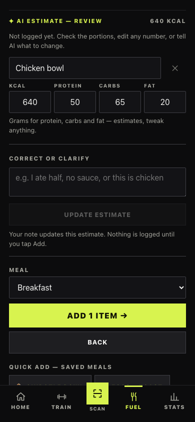

Visible state
AI readiness, elapsed time, retry, stop, errors, and save notices make the next step understandable.
IMPLEMENTED · EXPLAINED · PHOTOGRAPHED
A mobile-first quality-of-life pass for Gym Zero. Clearer taps, visible AI progress, consistent corrections, and fewer ways to lose your place.
Implementation is in the local working tree. This page is the report, not a deployed version of the app.

YOU CAN ALWAYS01 / THE OUTCOME
The biggest changes answer the questions that interrupt a phone user: Did my tap work? Is AI waiting or broken? Where do I correct it? Did that save? Can I leave this screen?
AI readiness, elapsed time, retry, stop, errors, and save notices make the next step understandable.
Food reviews, machine guides, and programs expose written feedback where you review the result.
Session drafts survive tab changes, rest keeps running, native Back works, and repeated taps are guarded.
All 40 comparison images are real browser screenshots at 390 × 844. “Before” is a reproduced baseline from commit 00f64ed; “After” is the updated working tree. Both use sample data and simulated AI responses. They show UI behavior, not real model quality. Screens are scrolled to the relevant content.
02 / THE VISUAL WALKTHROUGH
Twenty moments in the app, paired with the problem, implementation, and practical benefit. Tap any image to inspect it at full size.
01 / NAVIGATION
FOR YOUKeep the familiar visual identity while making destinations easier to recognize and operate.
Link to this comparison ↗02 / FOOD
FOR YOUGet to the main task sooner, with less scrolling before the first useful tap.
Link to this comparison ↗03 / FOOD
FOR YOUUnderstand which entry method you are using and leave the screen without losing an unfinished draft.
Link to this comparison ↗04 / AI
FOR YOUYou can distinguish waiting from failure and stop a request without abandoning your draft.
Link to this comparison ↗05 / AI
FOR YOUAnswer a question or explain a correction without learning a different interaction for each response.
Link to this comparison ↗06 / AI
FOR YOUCorrect the estimate in context and know exactly when it becomes a saved entry.
Link to this comparison ↗07 / AI
FOR YOUA failed request leaves an understandable route forward. In this example the readiness probe succeeds but the request is rejected; “ready” describes that probe, not a guarantee of request success.
Link to this comparison ↗08 / FOOD
FOR YOUKnow the tap registered, recover from an accidental add, and discover editing without guessing.
Link to this comparison ↗09 / FOOD
FOR YOUChange portions and nutrition with fewer precision taps. This edit path confirms saves; it is not an undo history for every edit.
Link to this comparison ↗10 / TRAINING
FOR YOUStart training from an empty session without needing to discover the scanner as an indirect way forward.
Link to this comparison ↗11 / TRAINING
FOR YOULog with less thumb precision, avoid duplicate sets, and return to the exercise and values you were using.
Link to this comparison ↗12 / TRAINING
FOR YOUCheck nutrition or another screen between sets without silently losing your timer.
Link to this comparison ↗13 / TRAINING
FOR YOURead the exercise first and adjust its targets more confidently. The roomier rows intentionally make long routines taller.
Link to this comparison ↗14 / NAVIGATION
FOR YOUSee whether the camera is starting or needs intervention, then retry or type a code. Both images show an environment without an available camera.
Link to this comparison ↗15 / AI
FOR YOUTell AI what you can see on the machine instead of relying entirely on an uninformative QR link.
Link to this comparison ↗16 / AI
FOR YOUExplain a mistaken machine identification or setup detail without confusing it with editing your saved exercise list.
Link to this comparison ↗17 / AI
FOR YOUSay “the starting weight feels too heavy” and review a replacement when it arrives. Separate programs per machine and exercise already existed; this pass protects them from stale results and selection races.
Link to this comparison ↗18 / AI
FOR YOUKnow whether the values were stored even if a connection check fails, and avoid unrelated settings being overwritten by another save.
Link to this comparison ↗19 / OTHER
FOR YOUGet a clear response after entering a measurement. This screenshot demonstrates weight confirmation; body and tape changes are also documented below.
Link to this comparison ↗20 / OTHER
FOR YOUUpdate your notes later while keeping the workout duration accurate.
Link to this comparison ↗03 / AN INTERACTIVE EXPLANATION
Try the states below. This is an illustrative mock UI in Gym Zero’s visual style. It does not call AI or save food.
04 / THE COMPLETE CHANGE LOG
The screenshots show the interface. These notes cover the state, persistence, data integrity, and recovery work behind it.
Connection states. A shared connection component distinguishes not set up, checking, ready, and unavailable. Unavailable connections offer retry and Settings. A configured endpoint can still be tried when the availability probe fails; manual entry remains available.
Connection normalization. Endpoint handling accepts an address without a scheme and normalizes a trailing /v1. This reduces configuration mistakes when copying the proxy address.
Progress and recovery. Food estimates, machine guides, and starter programs use the shared task hook. It exposes elapsed time, a longer-wait message, automatic retry status, cancellation, and recoverable request errors. Authorization, timeout, network, and malformed-response errors are handled explicitly.
Cancellation is functional. Stop aborts the active request. Leaving a screen aborts its task, and cancelled late responses are ignored. A synchronous task guard prevents a second request before React has updated the busy state. Cancellation does not claim to stop work already executing on a remote server.
Response validation. Program and machine-guide response shapes are checked before use. This protects the UI from malformed model output; it does not establish the factual quality of model advice.
Consistent feedback. The review always exposes a correction field, whether AI asks a follow-up question or returns items immediately. Update estimate is labeled in words. Copy explains that review is not logging; Add saves the result.
Corrections use what you see. Follow-ups include current manual edits, removed items, and merges, rather than reverting to the original estimate. Photo entry shows a preview and supports corrections. Conflicting review controls are disabled while a request runs.
Draft scope. Food text/photo/review state and workout input drafts survive tab navigation in memory during the current app session. They are not durable across page reloads or closing the app. Closing the food composer explicitly says it keeps the draft.
Saved feedback and undo. Manual, recent, saved-meal, and AI food additions provide a saved notice and undo. Food and drink removals can be undone, including linked records. Barcode adds and food edits confirm saving but do not all provide undo. Notices are a current-action recovery mechanism, not a permanent multi-step undo history.
Input confidence. Food fields have accessible labels and validation. Guarded saves prevent rapid duplicate submissions. The visible Edit affordance makes existing rows discoverable as editable content.
Atomic additions. A caloric drink creates its hydration record and food record in one database transaction. Both records succeed together, so a partial save cannot leave one ledger without the other.
Linked removal and restoration. Deleting either side of a linked drink/food pair removes the pair. Undo restores both records. Bulk AI food saving also commits the group together.
Live updates. Dexie subscriptions refresh affected food and hydration views when records change. Container lists rely on the subscription instead of combining it with a manual append, which could briefly display the new container twice.
Feedback around the tap. Drink notices name the amount and mention included calories where relevant. Adding a container confirms the save. Drink and container writes use busy guards.
Entry and exercise selection. An empty session has an exercise picker. Existing sessions can add exercises. Starting through Home or routine actions resumes an active workout instead of creating a competing session.
Set entry. Draft values are keyed by exercise and the selected exercise is remembered during tab navigation. Missing target reps can use the routine target. Weight and reps receive strict validation; set writes are protected against double taps.
Set identity and next steps. Set numbering does not reuse a deleted set number. A save notice names the set and values. Removal has explanatory feedback, and completed targets expose the next exercise. Finish/discard actions are protected against accidental or overlapping actions.
Rest. The rest timer belongs to the app, not just the workout screen. It survives tab changes, offers +30 seconds and Skip, and announces completion. Content has extra bottom space while the strip is present. Vibration depends on browser/device support; this is not a background push-notification feature.
Routine editing. Exercise names and target fields use separate rows. Larger reorder controls, labeled sets/reps, bounds, and save feedback improve editing. Routine start and edit use separate button targets.
Identification and guide feedback. Unknown machines accept optional details before asking AI. A failed identification still has a correction/retry route. Saved guides can be revised through an inline text field; guidance copy explains where to edit the saved exercise list.
Program refinement. Feedback is sent with the previous program. Generating reads the current strength baseline and workout history, rather than relying only on older screen state. The saved program remains available while a replacement is being requested.
Keep the right result on screen. An old database read cannot overwrite a newly generated program. Program display is tied to the selected exercise so switching between exercises does not show a mismatched program.
Existing capability preserved. The baseline already supported multiple exercises on one machine and separate machine/exercise programs. This pass improves their feedback and race protection; it does not claim to introduce that underlying capability.
Browser navigation. In-app screen changes integrate with the History API, so native browser Back returns through visited screens. Repeated navigation to the current screen is ignored. Page titles reflect the current screen and the content uses a main landmark.
Buttons and selection. Home, routine, scan-result, and video actions use actual buttons. Navigation reports its active destination with ARIA state, segmented controls report their selected value, and Scan has a visible text label.
Camera recovery. The scanner exposes starting, blocked, and unavailable states with appropriate instructions and Retry camera. It stops the misleading scan animation when the camera is unavailable. Lookup results are not clickable while loading; manual entry has a busy state and keyboard Go handling.
Touch and motion. Shared controls have larger touch targets and visible focus/pressed states. The audited forms use a 16px input font floor to reduce unwanted mobile zoom. Fields align more consistently. Reduced-motion preferences are respected and the screen-entry wipe animation is removed.
Instruction links. Instruction URLs are checked for an allowed scheme before opening. This makes external instruction actions more predictable.
Partial settings updates. The new patchSettings API merges the fields being changed inside a transaction. Converted targets, AI/training-profile, and body-goal forms avoid overwriting unrelated settings with an older full snapshot.
Measurement feedback. Weight, body goals, composition readings, and tape sessions use save confirmation and busy guards. Empty readings/tape submissions are disabled; weight logging guards invalid values. Existing charts remain, with shared mobile sizing improvements.
Workout notes. Editing a finished workout preserves finishedAt. A blank note clears previous text. Notes have an accessible label, a guarded Save action, and shared confirmation.
Loading and sync. Initial app loading has a readable status and reload recovery on failure. Missing summaries offer a way back to Stats. After synced data is applied, shared settings, the active workout, and the exercise catalogue refresh together. This is a local behavior improvement, not evidence of a complete live multi-device sync test.
Reusable action feedback. FeedbackProvider renders saved/error messages with status/alert roles. Notifications reserve top space rather than covering bottom actions. Undo can report failure and be retried. useAction applies a synchronous lock before running an asynchronous write.
Tests that fail honestly. Existing walkthrough scripts now exit unsuccessfully when a step fails. The app package adds QoL and machine-AI test commands; generated QoL audit images are ignored by Git.
Documentation. README describes the AI feedback/correction flow, session-scoped drafts, rest behavior, and how to run the new checks. The application pass changed 30 existing files and added 6 files. This report and its capture script are additional documentation artifacts.
ONE TAP / TWO LINKED RECORDS
Remove either linked entry → both are removed. Undo → both are restored.
05 / VERIFICATION
The application pass completed the production build and eight browser suites. The later report capture run reproduced all 20 scenarios in each version.
| Check | Result | What it covers |
|---|---|---|
npm run build | PASS | TypeScript and Vite production build. |
e2e | PASS · 44 steps | General app walkthrough. |
e2e:food | PASS · 11 steps | Food entry and logging flows. |
e2e:hydration | PASS · 10 steps | Hydration and linked calorie flows. |
e2e:food-week | PASS · 8 steps | Weekly nutrition views. |
e2e:scan | PASS · 3 steps | Fake-camera barcode detection, including WASM fallback. |
e2e:mobile | PASS | Mobile layout and control audit. |
e2e:qol | PASS | AI cancel/late response/retry/errors, edited feedback context, duplicate taps, linked undo, drafts, rest, Back, concurrent writes, note duration, viewport checks. |
e2e:machine-ai | PASS | Machine/exercise program separation, refinement, cancellation, failed identification recovery. |
Checked 320, 375, 390, 430, and 1280px widths. The final audited mobile screens had no horizontal overflow, no undersized targets under the audit’s rules, and no inputs below the 16px floor.
These findings apply to the inspected screens and states; they are not a claim of a full accessibility certification.
No live proxy/model evaluation, physical-phone or real Safari verification, real camera-permission test, or production application deployment. Vibration and camera behavior depend on device support.
Build succeeds with existing dependency annotation notices and a roughly 534KB JavaScript chunk warning.
06 / THE FILE INVENTORY
30 existing files modified; 6 new application/test files. Expand each group for its responsibilities. Paths are repository-relative.
app/src/App.tsxBrowser Back, rest across tabs, initial-load recovery, sync refresh, page title, main landmark.
app/src/main.tsxInstall shared feedback provider.
app/src/components/Feedback.tsxNEW · Notice UI, undo handling, and guarded asynchronous actions.
app/src/components/AiStatus.tsxNEW · Shared AI readiness, progress, and error/retry UI.
app/src/hooks/useAiTask.tsNEW · Cancellable tasks, elapsed time, retry status, late-response protection.
app/src/components/TabBar.tsxVisible Scan label and accessible active navigation.
app/src/components/Seg.tsxAccessible pressed state for segmented selections.
app/src/components/VideoPlayer.tsxButton semantics for video interaction.
app/src/styles.cssMobile controls, feedback space, AI states, routine rows, camera status, focus/motion styling.
app/src/lib/ai.tsEndpoint/status handling, retries/cancellation, feedback context, response validation.
app/src/data/food-actions.tsNEW · Transactional food/drink actions and linked undo.
app/src/data/index.tsAtomic partial settings updates and finished-workout note correctness.
app/src/types.tsDeclare patchSettings on the data API.
app/src/screens/Food.tsxEntry layout, draft continuity, consistent AI review/corrections, live data, saves and undo.
app/src/components/HydrationCard.tsxLive hydration, transactional logging, linked removal/undo, container save feedback.
app/src/screens/Workout.tsxExercise picker, per-exercise drafts, validated guarded set logging, completion actions.
app/src/screens/Machine.tsxGuide/program feedback, current generation context, stale-result protection.
app/src/screens/RoutineEdit.tsxLarger labeled routine fields, bounds and guarded saving.
app/src/screens/Routines.tsxSeparate routine start/edit buttons and active-workout behavior.
app/src/screens/Home.tsxReal button actions and existing-workout resume behavior.
app/src/screens/Scan.tsxCamera states/retry, manual-entry labels, lookup guards, result buttons.
app/src/screens/Settings.tsxTest/save status, busy fields, partial writes, targets/profile feedback.
app/src/screens/Body.tsxBody-goal partial writes, measurement/tape save guards and feedback.
app/src/screens/History.tsxValidated, guarded weight logging and confirmation.
app/src/screens/Summary.tsxLoading/missing states, guarded notes and clearing, save notice.
app/e2e/quality-of-life.mjsNEW · AI failure/cancel/retry, edited context, writes/undo, drafts/rest, Back, concurrency, layout checks.
app/e2e/machine-ai.mjsNEW · Separate machine programs, feedback, cancellation, failed identification recovery.
app/e2e/flow.mjsUpdate general walkthrough for current UI; fail the process when steps fail.
app/e2e/food-check.mjsUpdate food walkthrough assertions/selectors and failure exit.
app/e2e/food-week-check.mjsUpdate weekly nutrition walkthrough and failure exit.
app/e2e/hydration-check.mjsUpdate hydration walkthrough and failure exit.
app/e2e/mobile-audit.mjsUpdate mobile checks and failure exit.
app/e2e/scan-camera.mjsMake fake-camera test failures produce a failing exit.
app/package.jsonAdd e2e:qol and e2e:machine-ai scripts.
app/.gitignoreIgnore generated QoL audit screenshots.
README.mdDocument behavior, draft limits, and regression commands.
Report artifacts are separate: artifacts/mobile-ux-report/ contains this site; artifacts/capture-mobile-report.mjs reproduces the comparisons; artifacts/capture-manifest.json records their provenance. No application source or credentials are embedded in this site.
07 / QUESTIONS & ANSWERS
Yes. Before screenshots were reproduced from baseline commit 00f64ed in a separate temporary checkout; after screenshots come from the current working tree. Both use isolated browser contexts, matching sample data, and a 390 × 844 mobile viewport. They are actual application renders, not painted mockups. Relevant sections were scrolled into view, so scroll offsets can differ.
Why this question matters: Provenance matters because a polished concept image would not demonstrate implemented behavior.
No. Automated flows and report captures use deterministic simulated proxy responses, including delayed, rejected, malformed, and successful responses. This verifies UI and control flow, not model accuracy or reachability of your actual proxy.
Why this question matters: A reliable progress UI and a reliable model answer are different things to verify.
Food and workout drafts survive tab changes within the current app session. Reloading or closing the app resets those in-memory drafts. Saved records remain in the existing local database.
Why this question matters: This defines exactly when it is safe to expect an unfinished entry to still be there.
No. Manual, recent, saved-meal, and AI food additions, drink additions, and linked food/drink removals support it. Barcode saves and food edits confirm success but do not all offer undo. Only the currently displayed notice exposes its undo action.
Why this question matters: Recovery should be described precisely instead of promising a complete history of reversible actions.
The dark surfaces, lime actions, condensed headings, and overall navigation remain. The pass prioritizes clear actions, state feedback, spacing, labels, and touch targets. Larger fields make some screens longer.
Why this question matters: The aim was to make the familiar application easier to use on a phone, with a deliberate space-versus-density tradeoff.
No application deployment was performed for this pass. The implementation is in the local working tree. This Subir page publishes only the walkthrough and sample screenshots.
Why this question matters: A public report link should not be confused with a release of the working application.
Use a physical phone with the real proxy to verify camera permission prompts, Safari/keyboard behavior, vibration, and AI reachability/answer quality. Background app suspension and live multi-device sync were not established by this browser pass. The production build also retains dependency annotation notices and a roughly 534KB JavaScript chunk warning.
Why this question matters: These checks depend on hardware, browser policies, actual networking, or deployment behavior beyond simulated browser tests.